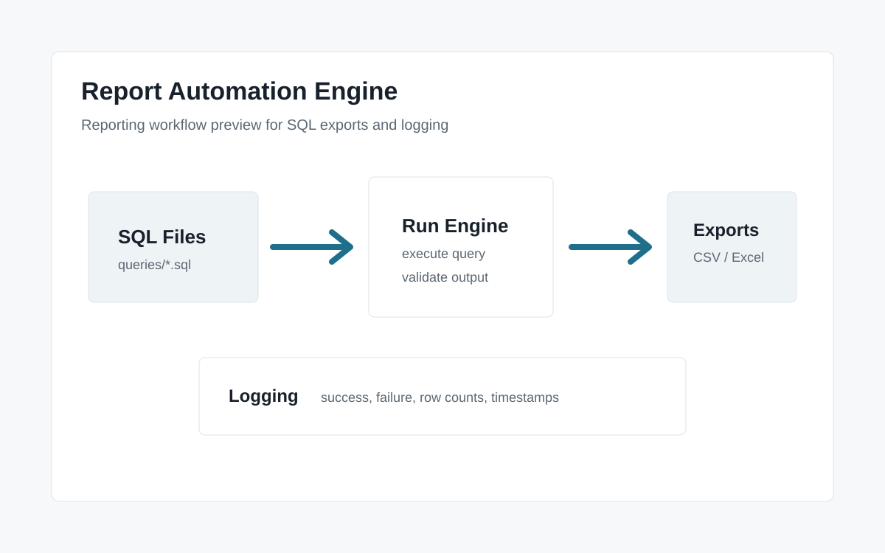

Project Overview
Many operational reporting workflows follow the same repetitive pattern: execute a saved SQL query, export the results, verify the output, distribute the file, and confirm the job completed successfully. This project packages that workflow into a reusable local reporting system focused on deterministic execution, repeatable outputs, and operational visibility.
Operational Problem
Recurring reporting processes are often handled manually through ad hoc exports, spreadsheets, scheduled tasks, or undocumented workflows. This increases the risk of inconsistent outputs, silent failures, missing reports, and duplicated effort. The Report Automation Engine standardizes recurring SQL report execution into a repeatable and traceable workflow.
Core Capabilities
- Config-driven report execution
- Scheduled recurring report workflows
- Deterministic CSV/Excel exports
- Append-only audit logging
- Job runtime and failure tracking
- Optional AI-generated report interpretation
- GUI-based report execution and monitoring
- Reusable query and output folder structure
How It Works
- SQL report definitions are stored as reusable .sql files
- Report settings are controlled through a config file
- The engine runs selected or scheduled reports
- Outputs are exported to CSV or Excel
- Each run is logged with success/failure status, runtime, and errors
- Optional AI interpretation can generate structured JSON and human-readable markdown summaries
- Reports can be run manually through a local GUI or scheduled through the operating system
AI-Assisted Interpretation
The engine supports optional AI-assisted interpretation after deterministic report execution completes. AI-generated summaries are advisory only and never block report execution. Standard report outputs remain the source of truth, while AI summaries can provide a structured review of results in JSON and human-readable markdown formats.
Scheduling and Audit Trail
Reports can be scheduled through the operating system, allowing recurring jobs to run without manual intervention when the machine is available. Each execution is recorded in an append-only run history, creating a simple audit trail of completed jobs, failures, runtime, and error messages.
Technical Details
- Python-based report execution engine
- Config-driven report definitions
- SQL file organization and reusable workflows
- CSV and Excel export support
- Append-only run history logging
- Scheduled execution through OS-level schedulers
- Local GUI for report selection, execution, outputs, and logs
- Optional AI-assisted post-processing summaries
- SQLite demo support with path to future SQL Server use
Screenshots

Future screenshots may include the local GUI, run history log, exported report outputs, and example AI summary files.
Reporting Value
The system demonstrates how recurring operational reporting can be standardized into a repeatable workflow with scheduling, logging, export management, and optional post-processing analysis. It is designed to reduce repetitive manual reporting work while improving visibility into report execution and outcomes.